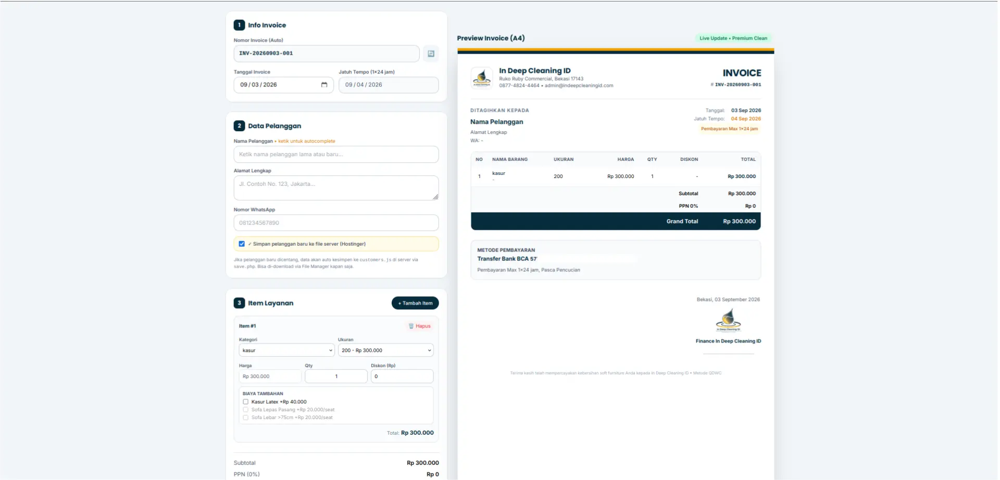
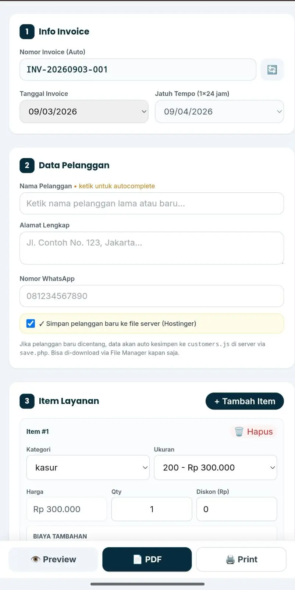
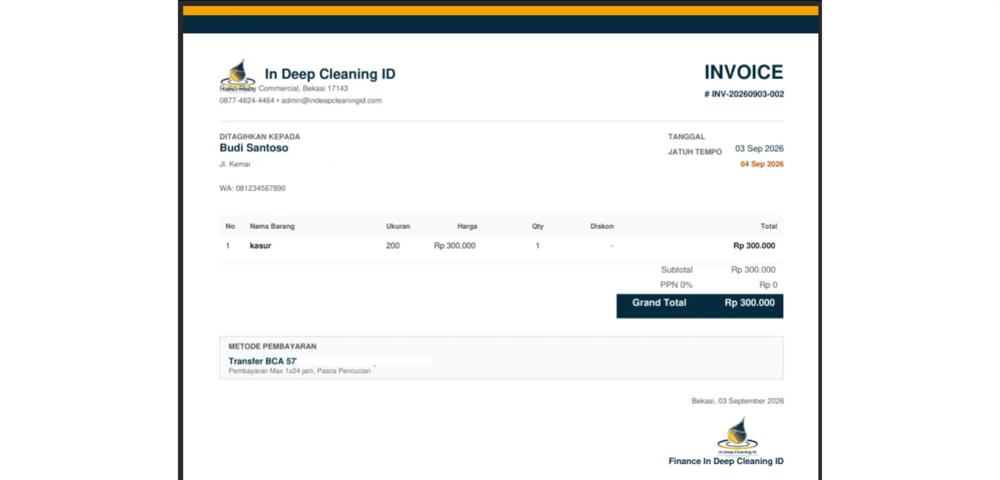
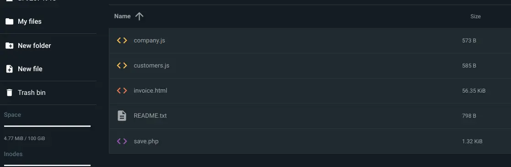

Experiment 006
StableBuilding a Self-Contained Invoice System Without a Database.
Can an internal business tool with customer DB, live A4 preview, and selectable text-based PDF be built end-to-end using only local LLMs — without a traditional database, just .js files + 44 lines of PHP on shared hosting?
System Requirements
CPU
Intel Core I5 11400F
RAM
16GB DDR4 3200 MT/s
GPU
RX 6700 XT
OS
Ubuntu 26.04 LTS
Inference Engine
Llama.cpp
Coding Tools
OpenCode + Cline (VS Code)
The Model That Helped Me
ORNITH-1.0-35B-A3B-IQ4_NL-GGUF
Frontend Stack
Tailwind CDN + Vanilla JS + jsPDF 2.5.1
Status
STABLE
Screenshots




Visualization
Why Text-Based PDF Won — Size, Selectability, and Cost
The same invoice generated two ways. Local AI initially suggested html2canvas screenshot — human corrected to jsPDF text API. The difference is 19x size and copy-paste.
Text-Based PDF — jsPDF (Chosen)
45KB — SelectableSize is KB for the first bar (45KB) and 0/100 for booleans. Rekening BCA 5771 •• 465 is selectable — masked here, full in real PDF.
Screenshot PDF — html2canvas (Rejected)
850KB — Image OnlyFile-Based Flow — No Database
One customers.js file, not MySQL. Download via File Manager anytime.
save.php allowlist: ['customers','company'] → file_put_contents → JSON {status:"ok"}
EXP 005’s chart was Lighthouse performance. This chart is architecture — proving file-based persistence is 19x smaller and more practical for SMB than a screenshot or a full DB.
Experiment Details
The public site from EXP 005 solved marketing — but operations were still manual. Invoices were typed in Word/Excel, customer data was scattered across WhatsApp, the 44 price items had to be remembered, and PDFs were inconsistent. I needed an internal tool that could (a) autocomplete returning customers, (b) auto-calculate from the same pricelist, (c) show a live A4 preview, and (d) generate a PDF where the bank account can be copied — without a SaaS subscription and without setting up MySQL on shared hosting.
- 1.
Single-file app:
invoice.html919 lines —lg:grid-cols-12(form 5 + preview 7 sticky), Tailwind CDN + jsPDF 2.5.1 + html2canvas 1.4.1 (loaded but not used for final PDF), Vanilla JS only,noindex, nofollowat.../invoice/admin/data/invoice.html (internal, noindex). - 2.
Company data:
company.js19 lines —name, logo, address, whatsapp, email, rekening {bank, no, an}— editable via⚙️ Edit Companymodal (6 fields + logo upload base64 max 500KB), auto-save viasave.php?file=company+localStoragefallback. - 3.
Customer DB file-based:
customers.js21 lines — array[{id, name, address, whatsapp}]with 2 dummy samples (Budi & Siti — labeled dummy),datalistautocomplete, dedupMap(name|wa)oninit(), auto-grow viasave.phpPOST JSON — storage on Hostinger 100GB file storage, downloadable via File Manager. - 4.
Backend:
save.php44 lines —header JSON + CORS,file_get_contents('php://input'), allowlist['customers','company'],file_put_contents($filename, $content)— no DB, no ORM. - 5.
Items logic: reads
indeepPricelist(22 categories → 44 items, same as EXP 005) — dependent dropdownskategori → ukuran, price auto, qty, discount, plus dynamic extraslatex +40k, lepasPasang +20k/seat, lebar75 +20k/seat—calcTotals()+renderItems(). - 6.
Live preview:
preview-a4210mm,setInterval(updatePreview, 600)— header with logo, meta (No, Date, Due +1 day), 7-column table, payment box, signature — updates on every input change. - 7.
PDF generation: text-based only
generateTextPDF()via jsPDF — logo from DOMcanvas.toDataURL('image/png')(fixes CORS), all text viapdf.text()+pdf.rect()soBCA 5771 •• 465is selectable (masked in portfolio, full in real PDF), filenameINV-YYYYMMDD-001 - Customer.pdf. - 8.
Mobile & print:
@media (max-width: 1024px)tableoverflow-x: auto,preview-a4full-width,mobile-sticky-barfixed bottom (Preview | PDF | Print),@media printhides.no-print,window.print()fallback.
A local open-source LLM (ORNITH 35B IQ4_NL via Llama.cpp) can generate this operational tool if prompts are deterministic per component (form, preview, PDF, save.php) and the builder understands the file-persistence vs DB trade-off. File-based is sufficient for SMB (<10k customers) and more maintainable than MySQL on shared hosting.
I built it by prompting the local model per batch — first invoice.html skeleton, then company.js modal, then customers.js autocomplete + save.php, then calcTotals/updatePreview, then generateTextPDF — each validated in a small context window via OpenCode + Cline in VS Code. Not one-shot.
- 1.
Logo CORS to PDF:
fetch(logo.png)failed onfile://and on the Hostinger path../../../assets/img/logo.png. Had to grab the already-loaded DOM<img>, draw tocanvas,toDataURL('image/png'), thenpdf.addImage()— initialfetch+FileReaderblob approach broke. - 2.
Pricelist hallucination (continuation of EXP 005): model invented prices for Kasur 200/180 etc. Fixed by forcing verbatim read of
indeepPricelist[kategori]and disablingukuranuntilkategoriis selected. - 3.
Mobile table overflow: 7-column table broke on phone — fixed with
display:block; overflow-x:auto;andtable thead/tbody display:table; width:100%at 1024px. - 4.
Dual persistence race:
localStoragevssave.phpwent out of sync after save — fixed withMapdedupname|waon load +Export manualbutton fallback whenfetchfails (500 or CORS).
Same pivot as EXP 005: stop relying 100% on AI. AI drafts syntax, human decides if save.php allowlist is safe, if pdf.addImage needs PNG conversion, if pricelist.js is the single source. Added business insight: for a small service business, file-based > MySQL — one customers.js downloadable via File Manager beats setting up phpMyAdmin on shared hosting.
Figures from the live internal tool on Hostinger. You can verify via the screenshots above and by inspecting save.php (44 lines).
Total Files
5
1 html + 2 js + 1 php + 1 txt
Invoice Lines
919
invoice.html
Backend
44 lines PHP
Storage
100GB
Hostinger file-based
Preview Sync
600ms
setInterval
Customer DB
2 → ∞
auto-grow
PDF Mode
Text-based
selectable, 45KB
Revisions
~12 batched
per component
The tool is stable and live internally — an admin can create an invoice in under 2 minutes, customer data auto-saves to customers.js (and localStorage), the PDF is 45KB text-selectable (vs 850KB image), and the owner can backup customers.js anytime via File Manager without DB knowledge. Not an enterprise ERP, but sufficient for a Jabodetabek SMB.
Determinism matters even more for internal tools: save.php must have an allowlist, logo must be converted to PNG, pricelist must be read verbatim. File-based persistence is underrated — local AI can generate CRUD without a database if the builder understands file I/O trade-offs. The model is the typer, the builder is the reviewer.
For business owners: you don’t need a Rp200k/month SaaS — with local AI + Hostinger 100GB you own your invoice tool 100%, backup is one download. For recruiters: this proves the builder can ship both the public marketing site (EXP 005) and the internal ops tool (EXP 006) with the same local stack — end-to-end ownership, no cloud dependency. Start from one file (save.php), validate file writes, then batch the next component.
Configuration Template
save.php — the entire backend (44 lines)
<?php
// save.php — 44 lines, no DB, file-based persistence
header('Content-Type: application/json');
header('Access-Control-Allow-Origin: *');
header('Access-Control-Allow-Methods: POST, OPTIONS');
if ($_SERVER['REQUEST_METHOD'] === 'OPTIONS') { http_response_code(200); exit(); }
$input = file_get_contents('php://input');
$data = json_decode($input, true);
$allowed = ['customers', 'company'];
if (!$data || !in_array($data['type'], $allowed)) {
http_response_code(400);
echo json_encode(["status" => "error"]);
exit();
}
file_put_contents($data['type'] . '.js', $data['content']);
echo json_encode(["status" => "ok", "file" => $data['type'] . '.js']);
customers.js — file-based DB (dummy samples)
/* dummy sample — not real customers */
const customersData = [
{
id: "CUST-001",
name: "Budi Santoso",
address: "Jl. Kemang Raya No. 12, Jakarta Selatan 12130",
whatsapp: "081234567890"
},
{
id: "CUST-002",
name: "Siti Aminah",
address: "Cluster Galaxy Blok B2 No. 8, Bekasi Selatan",
whatsapp: "082112345678"
}
];
// auto-updated via fetch(save.php) POST {type: "customers", content} + localStorage Map dedup
Do not copy this snippet blindly. The key lesson is the allowlist + file storage: local AI can generate thefetch+localStoragedual save, but you must ensurecustomers.jsis never overwritten with an invalid type. That safety check is human judgment.
- 1.
I kept persistence to files, not tables —
customers.json Hostinger 100GB is downloadable via File Manager in one click, no phpMyAdmin. For <10k rows, this is faster to maintain. - 2.
I required
text-based PDF(pdf.text()+pdf.rect()) instead of screenshot — local AI defaulted tohtml2canvaswhich creates a heavy image whereBCA 5771 •• 465cannot be copied. - 3.
I forced the single source
indeepPricelist(22 keys, 44 items) so invoice totals always match the public calculator — any hallucination is caught by diffing against this file. - 4.
I kept
localStorageas fallback — iffetch(save.php)fails (500 or CORS on Hostinger), data is still saved and anExport customers.jsbutton appears for manual download.
FAQ
Frequently Asked Questions
Do I need a database for a small business invoice system? ▼
No — for under ~10k customers, a single customers.js file on Hostinger file storage (100GB) is enough. It's downloadable via File Manager, no phpMyAdmin. save.php (44 lines) handles POST {type, content} with allowlist. localStorage is fallback if fetch fails.
Why is selectable text in PDF important? ▼
Customers need to copy the bank account BCA 5771 •• 465 without retyping. Screenshot PDFs (850KB, image) don't allow copy. Text-based jsPDF (45KB) does — plus it's 19x smaller. Logo still embeds via canvas PNG conversion.
Can local AI really handle jsPDF and file save logic? ▼
Yes, but batched per component. One-shot generation hallucinated pricelist and broke logo CORS. Batched prompting (form → preview → pdf → save.php) with human validation produced 919 lines that work on shared hosting.
For those of you unable to read this data from technical standpoint, here is the conclusion
This is not a public website — it's the internal cashier tool that comes after the website. If EXP 005 is the storefront, this is the cash register.
It lets the admin create an invoice in under 2 minutes: pick a returning customer (autocomplete), add items from the same 44-price list used on the website, see a live A4 preview, and download a PDF where the bank account can be copied.
It doesn't use a database. Customer data lives in one customers.js file on Hostinger (100GB) — you can download it anytime via File Manager, no database setup. A tiny 44-line PHP file saves it.
The PDF is text-based (45KB), not a screenshot (850KB) — so it's small and copyable, and the logo still appears. It was built with a local AI on consumer hardware, batched one component at a time.
It's not for a big enterprise with millions of rows, but for a small service business in the Jabodetabek area, it's sufficient, it's stable, it connects directly to the pricing from EXP 005, and you own it 100% — no monthly SaaS fee.
Disclaimer
A Note on Results
From a purely objective standpoint, this is not an enterprise-grade ERP. Given it was built with a 35B local model on consumer hardware and runs on shared hosting file storage, I consider it sufficient and practical for real small-business invoicing. The trade-off (file-based vs MySQL) is intentional for maintainability at this scale — with known limits if customer count grows beyond file-based practicality. That said, for the Jabodetabek service business it serves, it is stable, live, and fully owned.